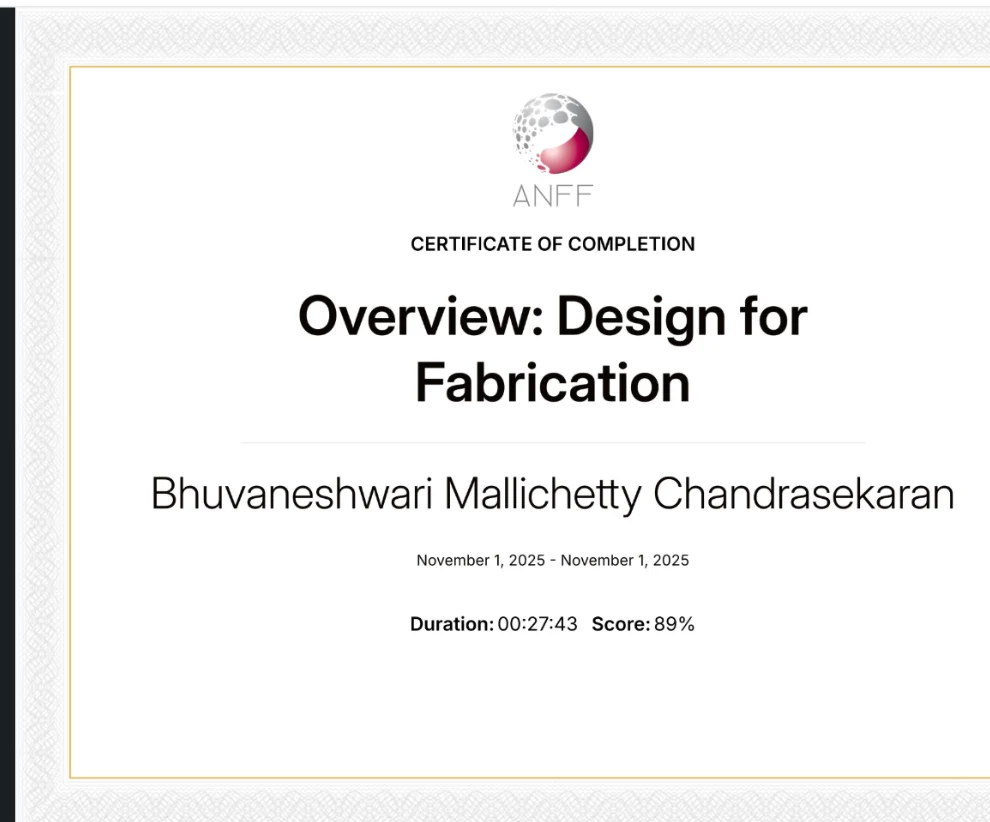
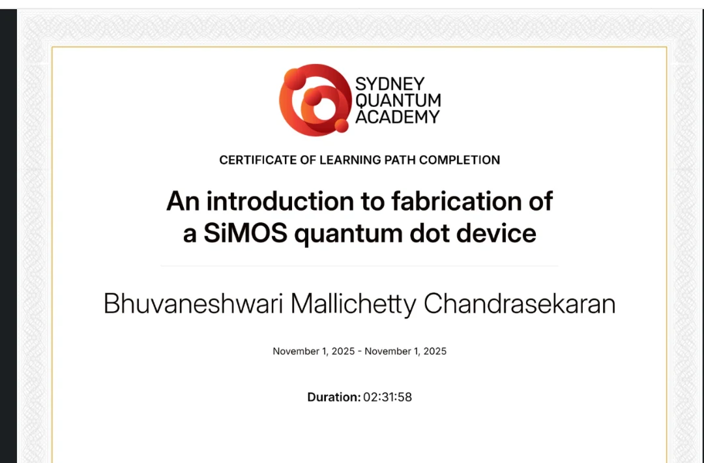

Fabricate the interface
Cleanroom process experience across PECVD, ALD, photolithography, RIE/DRIE, sputtering and SOI CMOS integration gives the physics a real process context.
Semiconductor Devices · Nanofabrication · Quantum Hardware
I’m Bhuvaneshwari M.C., a KTH M.Sc. Nanotechnology graduate in Stockholm. I enjoy turning difficult device-physics questions into hands-on work: fabricating structures, measuring them carefully, coding models, and learning what the device is trying to say across Si quantum dots, III–V heterostructures, HEMTs, scaled MOSFETs and qubit dynamics.
WHY I CARE ABOUT INTERFACES
My thesis made one idea tangible: a change at an oxide interface can alter the optical stability of a single nanoscale emitter.
At KTH, I used single-dot micro-photoluminescence to study how high-pressure water-vapour annealing changed Si quantum-dot emission and blinking. Across five resolved emitters, I quantified spectral behavior and measured up to a 12% improvement in duty cycle together with a 0.04 Hz reduction in ON/OFF blinking frequency.
That experience sharpened the research direction I now want to pursue: understanding how surfaces, interfaces, composition and process history shape device behavior. It is the same thread that draws me to AlGaAs/GaAs band alignment, polarization-induced 2DEG formation in AlGaN/GaN, scaled MOSFET electrostatics and decoherence in quantum devices.
My goal is to contribute in environments where the loop is complete: fabricate carefully, measure quantitatively, model physically, and use the result to improve the next device.
Cleanroom process experience across PECVD, ALD, photolithography, RIE/DRIE, sputtering and SOI CMOS integration gives the physics a real process context.
Micro-PL, I–V/C–V, AFM, SEM/EDS and optical microscopy turn nanoscale behavior into spectra, curves, morphology and extractable parameters.
TCAD, COMSOL, Python, MATLAB and QuTiP help connect measured trends to heterostructure physics, transport, electrostatics and coherence.
WHERE MY CURIOSITY IS HEADING
Semiconductor & quantum device engineering
I am building toward research where process technology, interface physics and device performance are treated as one connected problem. My experimental foundation comes from KTH cleanroom and characterization work; my independent projects extend that foundation into III–V heterostructures, GaN HEMT physics and quantum-device simulation.
HOW I GOT HERE
I did not arrive at nanotechnology in one jump. Electronics led me to instrumentation; instrumentation led me to measurement; cleanroom work and single-dot spectroscopy made me want to understand devices all the way from process history to physical behavior.
Independent semiconductor & quantum-device simulation
Developing Python-based projects in heterostructure physics, GaN HEMT polarization, quantum states, T1/T2 decoherence, Rabi dynamics and Josephson-junction physics. Several additional projects are still being refined locally and will be added as I finish documenting them.
M.Sc. Thesis Student · KTH
Resolved five individual emitters, quantified blinking and duty cycle across HWA pressure conditions, and connected surface passivation to nanoscale optical stability.
Nanofabrication & Characterization Labs · KTH
Executed SOI CMOS process steps with PECVD, ALD, lithography and RIE; optimized AFM scans, performed SEM/EDS analysis and extracted electrical parameters from I–V/C–V data.
Research Intern · ISRO
Developed and validated LabVIEW-based acquisition and calibration workflows, improving sensor-calibration accuracy by 20% and supporting instrumentation for static solid-rocket-motor test campaigns.
B.E. Electronics & Communication Engineering · Anna University
Built the electronics base that now supports device-oriented work; bachelor research on a multichannel delay-line/TDC architecture reported 9.76 ps precision using Xilinx ISE.
WORK THAT SHAPED ME
These are the projects I return to most often because each one taught me something different: how an interface changes a signal, how a process step shapes a device, or how a model can make a confusing result click.
M.Sc. THESIS · QUANTUM MATERIALS
Characterized five individual Si quantum dots on SOI using micro-photoluminescence, resolving emission between 630–676 nm with 24–39 nm FWHM. Compared HWA pressure conditions and quantified up to 12% duty-cycle improvement plus a 0.04 Hz reduction in blinking frequency.
KTH Royal Institute of Technology · 2023–2024
III-NITRIDES · HEMT PHYSICS
Models how Al composition changes spontaneous and piezoelectric polarization, interface sheet charge and 2DEG density—building device intuition for GaN HEMTs and polarization-engineered structures.
CLEANROOM · SOI CMOS
Executed a multi-step process spanning PECVD, ALD, photolithography, RIE, wafer inspection and defect analysis, connecting process decisions to device-integration quality.
DEVICE CHARACTERIZATION · COMPACT MODELLING
Used SPICE-based fitting to extract ideality factor, series resistance and doping concentration, then examined non-linear transport behavior across 298–383 K and model-to-measurement differences.
QUANTUM DEVICE SIMULATION SERIES
I use this Python series to revisit device physics from another angle: state preparation and Bloch-sphere visualization, T1/T2 decay, a thesis-based QD blinking model, Rabi oscillations and Josephson-junction energy levels. It is an ongoing learning series, with more work still being documented.
INDEPENDENT SIMULATION · PYTHON
Using Python-based modelling notebooks to build intuition for conduction/valence-band profiles, AlGaAs/GaAs confinement and how composition changes the semiconductor device landscape. Additional simulations are being refined before public release.
WHAT I BRING TO THE LAB
What I enjoy most is connecting process steps, measurements and models instead of treating them as separate tasks. That is how I learn what a device is really doing.
EXPERIMENT × COMPUTATION
My computational projects are a way to ask better experimental questions. A band-offset model clarifies what a heterojunction confines. A polarization model shows why an interface accumulates carriers. A decoherence simulation makes lifetime and control limitations visible before they become abstract.
PROJECTS — AND MORE ON THE WAY
This collection keeps growing. It brings together public GitHub work and selected lab, modelling and engineering projects; I’m still documenting several newer Python projects before I publish them.
Browse what’s public so far — more projects are on the way.
Models how Al composition changes spontaneous and piezoelectric polarization, interface sheet charge, and 2DEG density in an AlGaN/GaN heterostructure—building device intuition for HEMTs and polarization-engineered wide-bandgap structures.
Computes and plots the direct-gap AlGaAs bandgap as a function of Al mole fraction in the Γ-valley regime, while explicitly marking the composition range where the material becomes indirect-gap.
Uses Vegard’s law to evaluate AlGaAs lattice constant and mismatch on GaAs, connecting composition to strain and explaining why AlGaAs/GaAs is a classic nearly strain-free heterostructure.
Splits the composition-dependent bandgap discontinuity into conduction- and valence-band offsets using the standard 60:40 approximation, turning bandgap calculations into a heterojunction band-alignment model.
Builds |0⟩, |1⟩, and superposition states in QuTiP, applies Pauli X/Y/Z operations, and visualizes state transformations on the Bloch sphere as a physics-first foundation for qubit control.
Simulates exponential excited-state population loss, compares lifetimes associated with different material-quality scenarios, identifies the 1/e time constant, and checks the analytical behavior using density-matrix concepts.
Places energy relaxation and phase-coherence loss on the same visual frame to show why a qubit can retain population after useful phase information has already decayed.
Compares ideal coherent oscillations with T2-limited dynamics and overlays the decay envelope that constrains control fidelity in a realistic qubit.
Explores the current–phase relation, Josephson energy landscape, discrete levels, and anharmonicity that make selective |0⟩↔|1⟩ control possible in superconducting qubit architectures.
Analyzes Si/SiGe and Si/Ni patterned wafers while varying scan size, resolution, direction, and rate; uses amplitude/phase contrast to improve nanoscale topography and material-region interpretation.
Studies acceleration voltage, working distance, and sample tilt for semiconductor-device imaging, then uses SE/BSE contrast and EDS to link structure with composition.
Executed a multi-step SOI CMOS flow spanning PECVD, ALD, photolithography, RIE, wafer inspection, defect analysis, and thickness characterization—connecting cleanroom process steps to device integration.
Covers a complete MEMS sensor workflow: photolithography, oxidation, sputtering, lift-off and DRIE, followed by Wheatstone-bridge and LabVIEW-based characterization of sensitivity, TCR, hysteresis, accuracy and response time.
Builds 2D and 3D thermal models of localized transistor heating, compares fixed-temperature and convective boundaries, and sweeps geometry to study convergence and lateral heat spreading.
Investigated gate-length scaling, DIBL, threshold-voltage roll-off, subthreshold swing, leakage and drive current across bulk and SOI devices, using device simulations with Python-based post-processing to compare short-channel behavior.
Models potential, electric field and depletion width while testing discretization effects and doping-ratio shifts; the broader study compares 1D FDM and 2D FEM approaches in MATLAB.
Extracted physical parameters through SPICE-based fitting and investigated non-linear transport across temperature, using model-to-measurement discrepancies as a device-physics diagnostic rather than treating fitting as a black box.
A connected set of compact- and device-modelling studies covering 130 nm temperature scaling, NMOS/PMOS output sweeps, 30 nm FinFET bias stepping and bulk-versus-SOI comparisons. The focus was on linking model choices to changes in simulated device behavior.
Designed a time-to-digital converter architecture in Xilinx ISE using counter calibration, PLL, DPLL and DLL blocks; behavioral simulation over 100 cycles established picosecond-scale timing precision and led to a bachelor thesis/publication record.
Built an automated cart that follows user speed through a mobile application, combines Bluetooth control with an Arduino Mega, scans products by RFID, and surfaces billing through app/web interfaces over IoT connectivity.
2021–2026
KTH Royal Institute of Technology · Stockholm
Coursework spanning solid-state physics, nanofabrication technologies, methods and instruments of analysis, microsystem technologies, quantum materials and devices, semiconductor devices, compound semiconductors and nano-semiconductor device design.
Explore KTH technical projects2016–2020
Anna University · India
Foundation across electronics, digital design, communication systems and instrumentation. Bachelor research on multichannel delay-line time-interval measurement reported 9.76 ps precision using Xilinx ISE.
Bachelor research · NCCS / Springer · 2020LEARNING & RECOGNITION
Receiving a Distinction at the CeNSE Winter School was especially meaningful to me. The program deepened my exposure to nanofabrication processes, device fundamentals and cleanroom practice, and gave me a closer look at the research and technology development happening across CeNSE at IISc.
Texas Instruments
Texas Instruments
ESOL International
I wrote about Vikram-32 because India’s first indigenous processor chip felt like more than a product announcement to me—it marked a meaningful step in the country’s semiconductor journey and a direction I genuinely care about.
Read the article ↗

WHERE I HOPE TO CONTRIBUTE
I bring a combination of hands-on cleanroom experience, quantitative characterization, device-physics reasoning and a genuine love for learning through projects.
I have worked across deposition, lithography and etch steps; resolved individual quantum-dot spectra; optimized AFM and SEM workflows; extracted electrical parameters from I–V/C–V data; supported instrumentation under live test conditions; and built coding projects because modelling helps me understand the device physics more deeply.
I am looking for a PhD or industry R&D/process role where that range can be focused into deeper expertise—especially in semiconductor fabrication, quantum hardware, III–V devices, heterogeneous integration, advanced characterization or process/device modelling.
OPEN TO PHD & INDUSTRY R&D OPPORTUNITIES
I am actively exploring opportunities across Europe in semiconductor and quantum-device research, nanofabrication, advanced characterization, III–V technology, heterogeneous integration and process/device R&D.